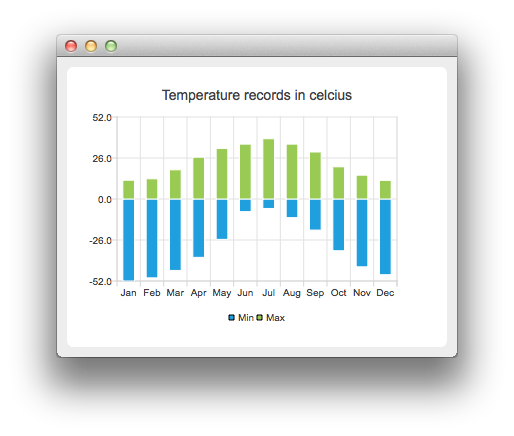

Temperature Records Example
The example shows how to create a bar chart with negative bars.
For our example we use temperature data.

Running the Example
To run the example from Qt Creator, open the Welcome mode and select the example from Examples. For more information, visit Building and Running an Example.
Crating Negative Bars
First we create two barsets and append the data to them. One set represents the minimum temperatures and another the maximum temperatures.
QBarSet *low = new QBarSet("Min");
QBarSet *high = new QBarSet("Max");
*low << -52 << -50 << -45.3 << -37.0 << -25.6 << -8.0
<< -6.0 << -11.8 << -19.7 << -32.8 << -43.0 << -48.0;
*high << 11.9 << 12.8 << 18.5 << 26.5 << 32.0 << 34.8
<< 38.2 << 34.8 << 29.8 << 20.4 << 15.1 << 11.8;
We create the series and append the barsets to it. The series takes ownership of the barsets.
QStackedBarSeries *series = new QStackedBarSeries();
series->append(low);
series->append(high);
Here we create the chart object and add the series to it. We set the title for the chart with setTitle, and then turn on animations of the series by calling setAnimationOptions(QChart::SeriesAnimations)
QChart *chart = new QChart();
chart->addSeries(series);
chart->setTitle("Temperature records in celcius");
chart->setAnimationOptions(QChart::SeriesAnimations);
To have the categories displayed on an axis, we need to create a QBarCategoryAxis. Here we create a category axis with a list of categories and add it to the chart aligned to bottom, acting as the x-axis. The chart takes ownership of the axis. For y-axis we use a value axis, aligned to the left-hand side. We change the range for the y-axis, as this gives nicer results than with autoscaling.
QStringList categories = {
"Jan", "Feb", "Mar", "Apr", "May", "Jun", "Jul", "Aug", "Sep", "Oct", "Nov", "Dec"
};
QBarCategoryAxis *axisX = new QBarCategoryAxis();
axisX->append(categories);
axisX->setTitleText("Month");
chart->addAxis(axisX, Qt::AlignBottom);
QValueAxis *axisY = new QValueAxis();
axisY->setRange(-52, 52);
axisY->setTitleText("Temperature [°C]");
chart->addAxis(axisY, Qt::AlignLeft);
series->attachAxis(axisX);
series->attachAxis(axisY);
We also want to show the legend. To do so, we get the legend pointer from the chart and set it to visible. We also place the legend to the bottom of the chart by setting its alignment to Qt::AlignBottom.
chart->legend()->setVisible(true);
chart->legend()->setAlignment(Qt::AlignBottom);
Finally we add the chart onto a view. We also turn on the antialiasing for the chartView.
QChartView *chartView = new QChartView(chart);
chartView->setRenderHint(QPainter::Antialiasing);
Chart is ready to be shown. We set the chart to be the central widget of the window. We also set the size for the chart window and show it.
QMainWindow window;
window.setCentralWidget(chartView);
window.resize(600, 300);
window.show();